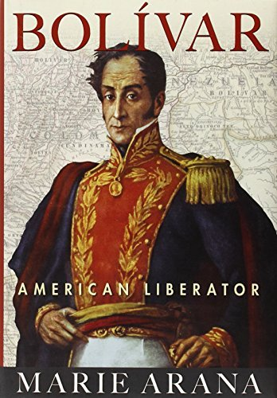

"Bolivar: American Liberator"
- Read on 2022-03-14
- Rating: ️️️️️
- Format: 🎧 (20 hours 11 minutes)
Bolívar seemed like an interesting and determined man, and clearly vital to the liberating of, what are now, several northern countries in South America. It's a shame that more of his vision wasn't grasped while he was alive, and that he wasn't heralded more during his dying years for what he did. It seems even more of a shame that his name is being used in modern times for things in direct contradiction to what The Liberator actually stood for. Regardless, his heroics seem to be truly remarkable, especially with the more complex issues of liberating and attempting to unite the varied peoples of South America.
As for the book itself, it was a struggle at many points - potentially due to my total unfamiliarity with the players involved, as well as the more detailed geography they discussed at times. Unless you're really looking to dive into South American history, it's not one I would recommend.
- Prior: The Wednesday Wars
- Next: The Rosie Effect